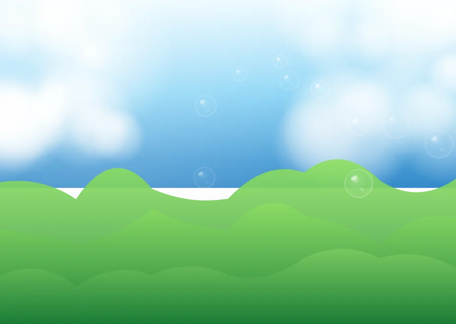
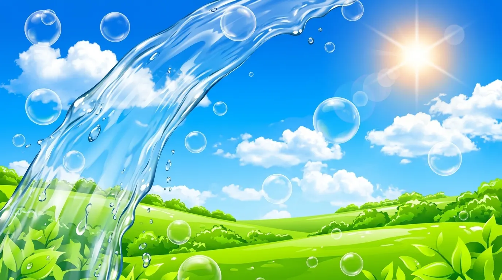
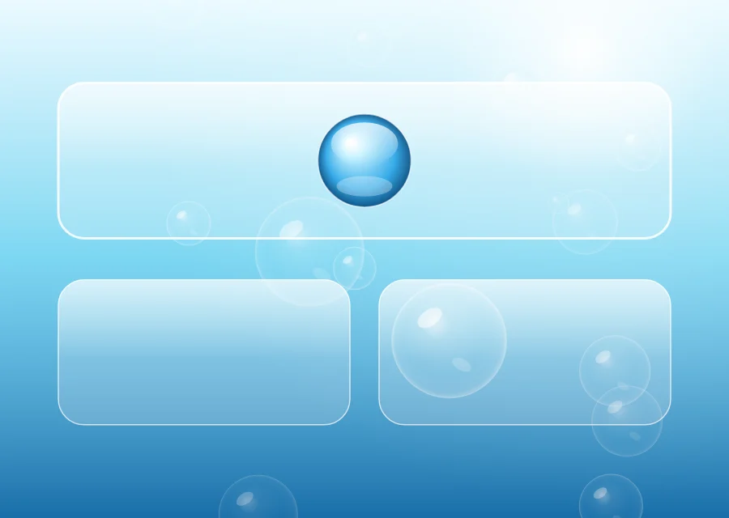
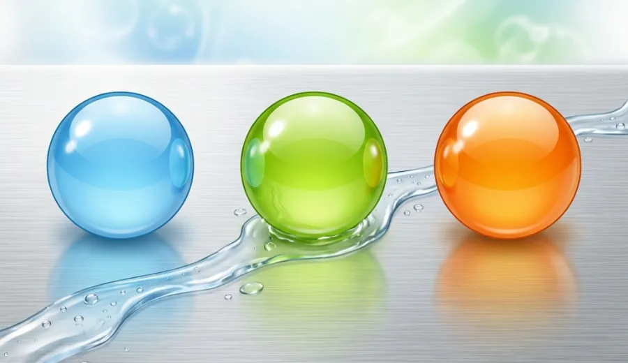
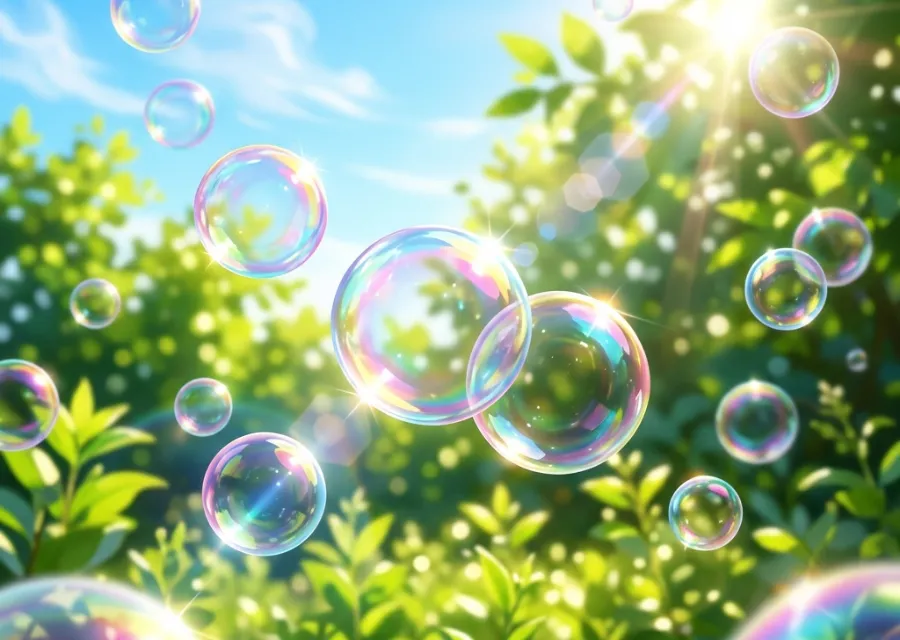
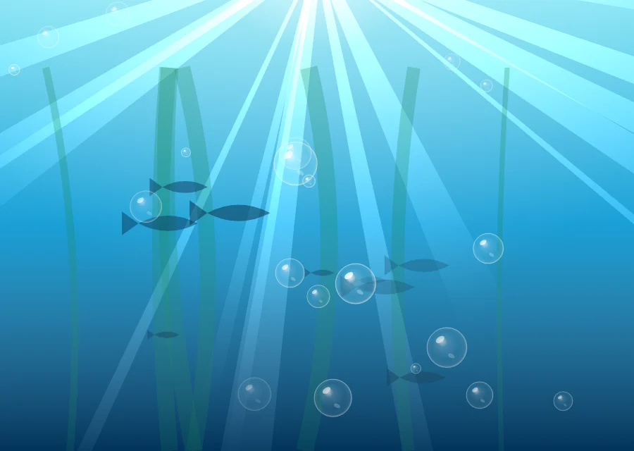
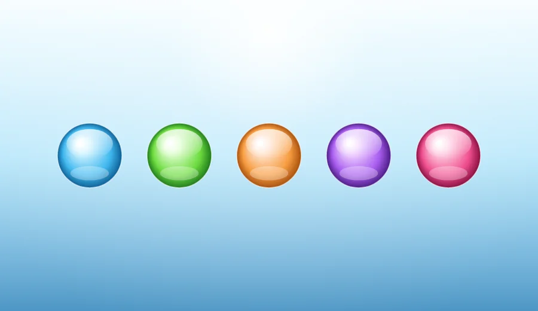
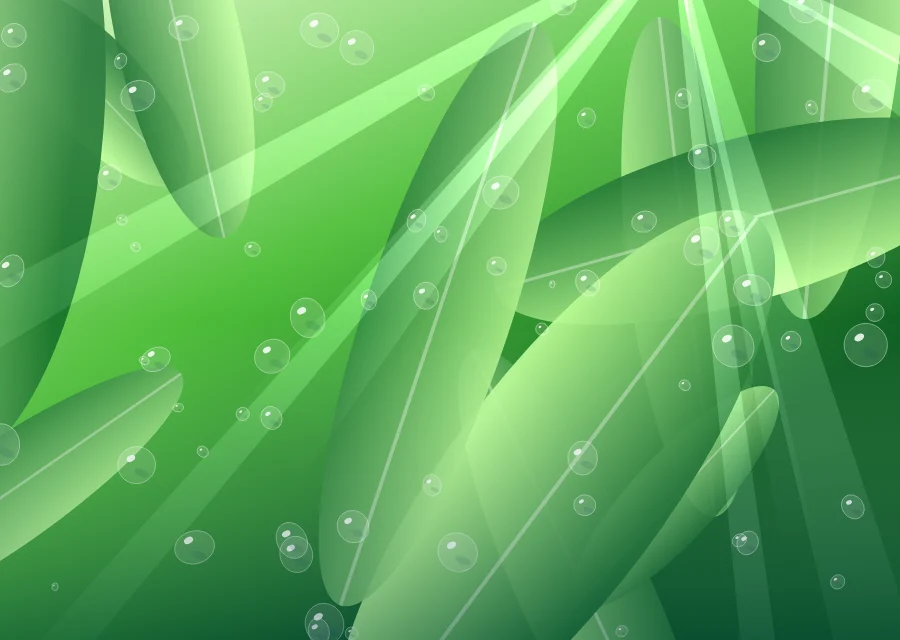
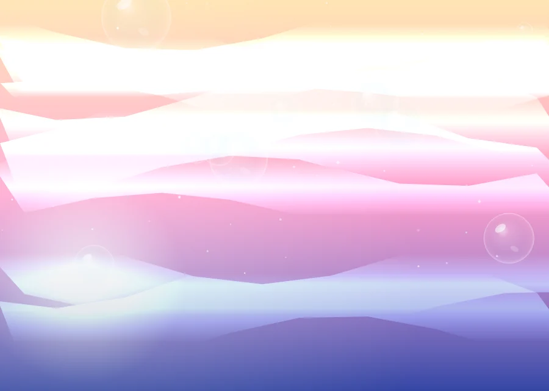

Naturaleza, pero prolija
Pasto sin bichos, agua sin barro, cielo sin humo. La naturaleza que aparece es la de un folleto: la idea de naturaleza, no un lugar.

Durante ocho años, casi todo lo que se encendía tenía el mismo aire: cielo de mediodía, agua limpia, plástico brillante y un reflejo blanco arriba a la izquierda. Recién en 2017 alguien le puso nombre. Para entonces ya había desaparecido.
El Frutiger Aero no es nostalgia por una época: es la imagen de una idea que en 2004 parecía obvia. Que las computadoras nos iban a acercar a la naturaleza en vez de alejarnos. Que el futuro era transparente, ordenado y con olor a lluvia.

Pasto sin bichos, agua sin barro, cielo sin humo. La naturaleza que aparece es la de un folleto: la idea de naturaleza, no un lugar.

Vidrio, transparencia, capas. Si podés ver lo que hay atrás de una ventana, el sistema no te esconde nada. Eso era la promesa.

Aluminio cepillado, plástico blanco, botones de caramelo. La otra mitad: el objeto caro que se limpia con un trapo.
El nombre viene de dos lados. «Frutiger» es la tipografía de Adrian Frutiger, humanista y redonda, la de los carteles de los aeropuertos. «Aero» es el nombre que Microsoft le puso a la interfaz de vidrio de Windows Vista. Los juntó un grupo de gente en internet, en 2017, cuando se dieron cuenta de que faltaba una palabra para algo que habían visto toda la vida.
No hace falta ser diseñador para reconocerlo, porque es un lenguaje de pocas palabras. Casi todo lo que se hizo entre 2004 y 2012 sale de mezclar estas.

La pieza central. Brillo arriba a la izquierda, aro de luz en el borde y un reflejo chiquito abajo. Sin esos tres, es un círculo.

Vista desde abajo, con los rayos de sol entrando en abanico. Toda pantalla que se preciara tenía un pez.

El botón «Web 2.0». Degradado vertical, brillo elíptico en la mitad de arriba y sombra abajo. Estuvo en absolutamente todo.

Agua quieta sobre una superficie. Es lo que hace que una hoja se vea recién lavada en vez de simplemente verde.

Lens flare, rayos, estrellitas de cuatro puntas. La luz nunca es neutra: siempre entra de algún lado y deja rastro.
Medusas, peces de colores, delfines. Naturaleza que además de limpia es transparente: la metáfora completa.
No empezó ni terminó un día puntual, pero se puede marcar el arco: nace con la banda ancha y la cámara digital, y muere el día que las interfaces se aplanan.
El fondo de Windows XP —una foto real de una loma en California— instala la idea de que la computadora se abre a un paisaje. Todavía no es Aero, pero sin eso no hay Aero.
Web 2.0: botones de caramelo, esquinas redondeadas y degradados en todos lados. Se empieza a ver el vidrio en las maquetas que Microsoft muestra de «Longhorn».
Windows Vista sale con Aero: ventanas de vidrio con desenfoque de verdad. El iPhone y el iPod touch traen los iconos de plástico brillante. La Wii pone una interfaz blanca, limpia y redonda en el living de cualquiera.
Windows 7 pule el vidrio y lo hace rápido. La PlayStation 3 tiene un fondo que cambia de color con el mes. Los salvapantallas de peces son un género. Todo dispositivo que se vende tiene una foto de agua adentro.
Sale Windows Phone con Metro: fondo negro, cuadrados planos, tipografía enorme. Nadie se da cuenta todavía, pero eso es el aviso.
iOS 7 saca todo el plástico de un día para el otro. Windows 8 tira el vidrio a la basura. En menos de un año la estética entera pasa de ser el default a ser una vergüenza de la que nadie habla.
En internet aparece la palabra «Frutiger Aero» para nombrarlo. La gente que era chica en 2007 empieza a coleccionar capturas. Hoy es un género visual con vida propia, hecho por gente que lo vivió de refilón.
Eso es lo que lo separa de otras estéticas: nadie la eligió. Venía puesta de fábrica en lo que uno encendía.
Aero Glass: ventanas translúcidas con desenfoque real, el orbe de inicio y los gadgets de la barra lateral. Es de donde sale la mitad del nombre.
Llegó primero, en 2000: botones de gel, barras a rayas y el Dock con reflejo. Apple inventó el idioma y Microsoft lo hizo masivo.
Blanco, redondo y con sonido de burbujas. El Canal Mii y el pronóstico del tiempo eran interfaces de vidrio para toda la familia.
Una cruz de iconos sobre un fondo de ondas que cambiaba de color según el mes. Puro brillo, puro degradado.
Reproductores con carcasa de plástico brillante y menús con reflejo. El objeto era tan Aero como la pantalla.
Iconos con lomo brillante, la libreta con textura de cuero, el estante de madera de los libros. Skeuomorfismo puro, la última etapa.
Ninguna de estas ocho viene de un banco de fotos. Están hechas con código: degradados, burbujas y rayos armados a mano, uno arriba del otro. Tocá cualquiera para verla grande.
Lo de arriba lo dibuja el navegador. Esto no: son fotos sacadas por gente, elegidas una por una porque tienen la paleta del Frutiger Aero — agua, burbujas, pasto, cielo, gotas y bichos abajo del agua. Todas son de dominio público o Creative Commons, así que se pueden usar y cambiar. Abajo de cada una está quién la sacó y con qué licencia.
Buscadas en Openverse, filtrando por licencias que permiten uso comercial y modificación. Tocá una foto para verla grande y llegar al original.
Es el mismo dibujante que hizo todo lo de arriba, corriendo en tu navegador. Cada vez que tocás sale otro distinto, y te lo podés llevar.
Tocá «Otro» para que dibuje uno nuevo.
Sale a 1100 × 620. Si lo querés más grande, avisá y le subo el tamaño: el dibujo es vectorial, no una foto estirada.
Se suele contar como un cambio de gusto, y en parte lo fue. Pero hubo razones bien concretas, y ninguna tiene que ver con que el vidrio fuera feo.
El teléfono ganó. En una pantalla de cuatro pulgadas, un botón con degradado, brillo y sombra ocupa lugar y no se entiende mejor. Lo plano se lee más rápido.
La batería. Desenfocar en tiempo real lo que hay atrás de una ventana cuesta energía. En un escritorio enchufado no importa; en un teléfono sí.
Las pantallas retina. Con el doble de píxeles, cada textura de cuero y cada reflejo había que rehacerlo. Un color plano se escala gratis.
Colores planos, sin degradado. Tipografía fina. Mucho espacio en blanco. Iconos de línea. Sombras apenas insinuadas, y sólo para indicar altura.
Funcionaba mejor en un teléfono, se dibujaba más rápido y se veía moderno. En dos años no quedó nada del otro.
Lo que quedó dando vueltas. El vidrio volvió: los sistemas de hoy vuelven a desenfocar el fondo detrás de los paneles, y hasta le pusieron nombre de material otra vez. Lo que no volvió es la promesa. Aquel vidrio decía «esto es transparente y limpio»; el de ahora es una textura más.